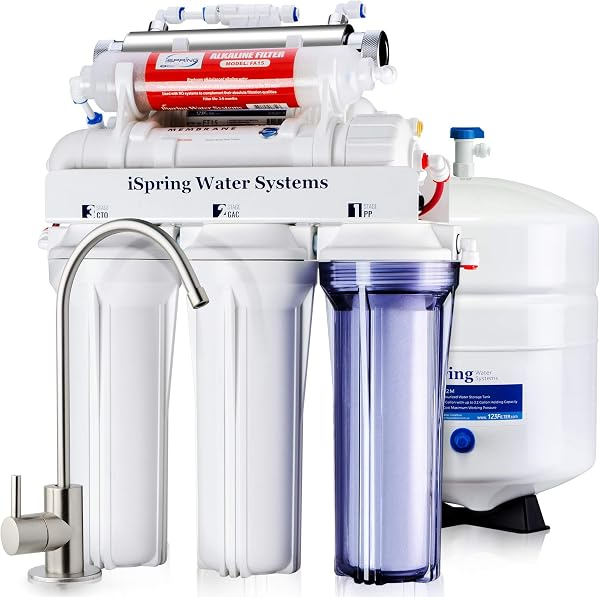
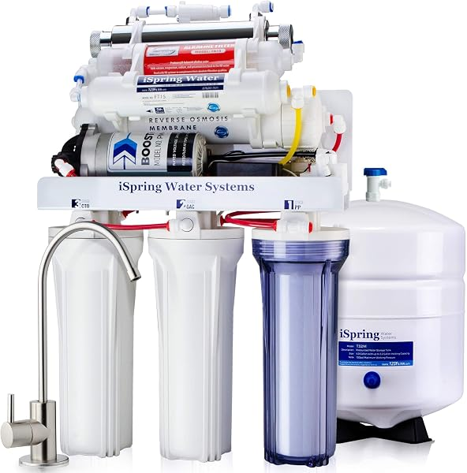
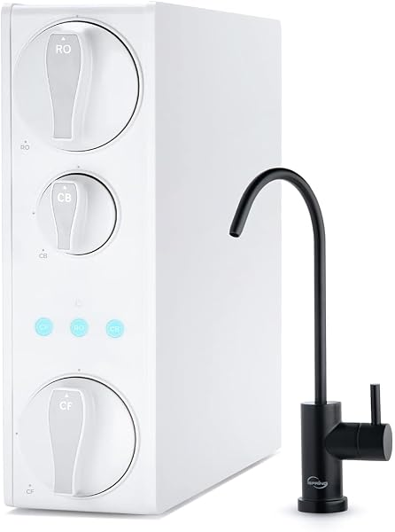

iSpring Reverse Osmosis Review 2026: RCC7AK, RCC1UP-AK, RO500 Compared
PureFlow Lab is reader-supported. We may earn a commission when you buy through links in this guide — at no extra cost to you. As an Amazon Associate, we earn from qualifying purchases. See our Disclosure for details.
Top Picks (At a Glance)
The iSpring lineup we cover in this review, ranked by use case:

iSpring RCC7AK — 6-Stage Alkaline, 75 GPD
The single most-reviewed RO system on Amazon — 21,000+ ratings at 4.6 stars. 6-stage with alkaline remineralization built in, 75 GPD, NSF certified, and the patented top-mount faucet that makes installation far easier than most. The default pick for most homeowners who want great-tasting RO water at a fair price. ~$190–$235.
Check Price on Amazon →
iSpring RCC7AK-UV — 7-Stage Alkaline + UV, 75 GPD
The RCC7AK plus an 11W UV sterilization stage — the UV light kills bacteria and viruses an RO membrane can miss, which matters for well water and unchlorinated sources. NSF certified, 75 GPD. ~$266.
Check Price on Amazon →
iSpring RCC1UP-AK — 100 GPD, 7-Stage with Booster Pump
The highest-rated system in the lineup (4.7 stars). A 100 GPD membrane plus a built-in booster pump that solves the #1 cause of poor RO performance: low household water pressure. Alkaline remineralization included. ~$345.
Check Price on Amazon →
iSpring RO500 — 500 GPD Tankless
iSpring’s answer to Waterdrop. Tankless (no storage tank), 500 GPD, NSF/ANSI 58 certified, 2:1 wastewater ratio. The pick if you want iSpring reliability in a modern tankless form factor. ~$535.
Check Price on Amazon →
iSpring RCB3P — 300 GPD Tankless, Booster Pump
For high-demand homes, small offices, or light commercial use. 300 GPD, booster pump, pressure gauge, built for heavier duty than the residential line. ~$467.
Check Price on Amazon →TL;DR: iSpring is the most popular RO brand on Amazon and the best value in alkaline RO. The RCC7AK (~$190–$235) is the right pick for most homeowners — 6-stage alkaline filtration, 75 GPD, NSF certified, the easiest install in the category thanks to its patented top-mount faucet, and 21,000+ reviews at 4.6 stars (the most-proven system you can buy). On well water, get the RCC7AK-UV for its UV stage. Fighting low water pressure? The RCC1UP-AK adds a booster pump and is the highest-rated system in the lineup (4.7 stars). Want tankless? The RO500 (500 GPD) is iSpring’s answer to Waterdrop. See how iSpring stacks up against the field in our APEC vs iSpring vs Waterdrop showdown.
If you’ve spent any time shopping reverse osmosis on Amazon, you’ve seen the iSpring RCC7AK — it’s been a category best-seller for years and has more reviews than any competitor. iSpring’s whole strategy is breadth and value: alkaline standard, the widest lineup of any RO brand, and an installation design that genuinely makes the job easier. This review covers the full iSpring RO lineup with honest assessments of where each model wins.
About iSpring Water Systems
iSpring Water Systems is a US company based in Alpharetta, Georgia. The brand built its name on the RCC7 and RCC7AK — among the best-selling residential RO systems ever made — and has since grown into the widest lineup in the category, spanning tank-based, tankless, booster-pump, and light-commercial systems.
The brand’s core differentiators:
- The patented top-mount faucet. iSpring’s signature feature. On most RO systems, connecting the dedicated faucet is the fiddliest part of the install; iSpring’s design routes the connection through the top of the faucet, making it dramatically easier. It’s a small thing that owners consistently single out.
- Alkaline remineralization as standard. The “AK” models build in an alkaline stage that adds minerals back after the RO membrane, restoring the natural taste that flat RO water loses. iSpring includes this at a lower price than most competitors charge for it.
- The widest lineup in RO. Tank-based (RCC7AK), UV (RCC7AK-UV), booster-pump (RCC1UP-AK), tankless (RO500), and light-commercial (RCB3P). Whatever your situation, iSpring usually has a model for it.
- Proven at massive scale. The RCC7AK’s 21,000+ reviews are the largest review base of any RO system. That volume of real-world feedback is itself a feature — you’re buying the most battle-tested system on the market.
- Lifetime tech support and strong warranty. US-based support and a 1-year money-back guarantee back the lineup.
What iSpring doesn’t lead on: the absolute lowest price (the Express Water RO5DX undercuts it) and the build-quality reputation that APEC holds among professionals (the two are very close, but APEC edges it on US assembly). iSpring competes on value, breadth, and install ease.
The iSpring Lineup Explained (Decoding the Names)
iSpring’s naming is mostly logical once you know the pattern:
- RCC7 — the base 5-stage tank system. The original best-seller.
- RCC7AK — adds an AlKaline remineralization stage (6-stage). The most popular model.
- RCC7AK-UV — adds a UV sterilization stage on top of alkaline (7-stage). For well water.
- RCC1UP / RCC1UP-AK — the UP means a booster Pump is included, for low water pressure. 100 GPD.
- RO500 / RO500AK — the tankless line. 500 GPD, no storage tank.
- RCB3P — light-commercial, 300 GPD, booster pump.
- RO100 — a simpler 5-stage budget tank system.
If you’re shopping in 2026, you’ll most likely choose among the RCC7AK, RCC7AK-UV, RCC1UP-AK, RO500, or RCB3P depending on your water source, pressure, and form-factor preference.
Top Picks Detailed
Best Overall: iSpring RCC7AK
The iSpring RCC7AK is the right iSpring pick for most homeowners and the most-reviewed RO system on Amazon by a wide margin. Six stages including alkaline remineralization, 75 GPD output, NSF certification, and the patented top-mount faucet that makes installation noticeably easier than competitors.
Two things make the RCC7AK the default recommendation in its price tier. First, the alkaline stage — RO water tastes “flat” because the membrane strips minerals out, and the RCC7AK adds them back for a more natural taste, at a price below what most competitors charge for alkaline. Second, the 21,000+ reviews — no other RO system has anywhere near that depth of proven, real-world feedback.
The trade-offs are standard tank-based ones: a ~3-gallon storage tank takes cabinet space, and you get tank-style maintenance. But for great-tasting drinking water at a fair price with the easiest install in the category, the RCC7AK is hard to beat.
Pros: Most-proven RO system on Amazon (21,000+ reviews), alkaline remineralization included, patented top-mount faucet (easiest install), 75 GPD, NSF certified, frequently on sale. Cons: Tank-based (takes cabinet space), not the absolute cheapest (Express Water undercuts it), no smart features.
Price at last check: $187.98 (typically ~$235). Check Price on Amazon →
Best for Well Water: iSpring RCC7AK-UV
The iSpring RCC7AK-UV is the RCC7AK with an 11W UV sterilization stage added (7 stages total). The UV matters specifically for well water: an RO membrane removes dissolved solids and contaminants extremely well, but it’s not a guaranteed barrier against bacteria and viruses. City water is already chlorinated, so this rarely matters on municipal supply — but well water has no disinfection, which is exactly why well owners need UV.
The UV stage deactivates bacteria and viruses as the water passes through, closing the gap RO alone leaves, while still giving you the alkaline-remineralized taste. If you’re on a well, also read our whole house RO guide — well water often needs upstream treatment (sediment, iron) before any point-of-use RO system to protect the membrane and UV lamp.
Pros: UV stage closes RO’s microbiological gap (essential for well water), alkaline remineralization included, same easy install and NSF certification as the RCC7AK. Cons: More expensive than the standard RCC7AK, UV bulb is an annual replacement cost, well water may need upstream pre-treatment the system doesn’t include.
Price at last check: $266.46. Check Price on Amazon →
Best with Booster Pump: iSpring RCC1UP-AK
The iSpring RCC1UP-AK is the highest-rated system in iSpring’s lineup (4.7 stars) and the answer to the most common RO complaint: weak output. Reverse osmosis depends on water pressure to push water through the membrane, and many homes — especially those on wells or upper floors — simply don’t have enough. The RCC1UP-AK includes an electric booster pump that solves this, plus a 100 GPD membrane and alkaline remineralization.
If your home has low water pressure (under ~50 psi), a standard RO system will produce water slowly and waste more of it. The booster pump fixes both problems, which is why this model earns the lineup’s best rating. The trade-off is that it requires a power outlet under the sink and costs more than the passive RCC7AK.
Pros: Highest-rated iSpring (4.7 stars), booster pump solves low-pressure problems, 100 GPD high flow, alkaline included, less wastewater. Cons: Requires under-sink power outlet, more expensive than the RCC7AK, more complex install.
Price at last check: $344.98. Check Price on Amazon →
Best Tankless: iSpring RO500
The iSpring RO500 is iSpring’s entry into the tankless category that Waterdrop pioneered. Tankless means no storage tank under the sink — water is filtered on demand, reclaiming 12-18 inches of cabinet space and eliminating the “you ran out of water, now wait for the tank” problem. 500 GPD output, NSF/ANSI 58 certified, 2:1 wastewater ratio (far better than tank-based systems’ typical 1:3).
The RO500 is the pick if you want iSpring’s brand and support in a modern tankless design. It competes most directly with the Waterdrop G3P600 — Waterdrop carries a broader NSF certification stack, while iSpring counters with its support and the option to stay in one brand ecosystem.
Pros: Tankless (no tank, reclaims cabinet space), 500 GPD, NSF 58 certified, 2:1 wastewater ratio, requires no separate storage tank. Cons: Much pricier than the tank-based RCC7AK, requires power, narrower NSF certification than the Waterdrop G3P600, no alkaline in the base RO500 (step up to the RO500AK for that).
Price at last check: $534.83. Check Price on Amazon →
Best High-Capacity: iSpring RCB3P (Light Commercial)
The iSpring RCB3P is built for higher demand than a normal household: large families, small offices, coffee shops, or any light-commercial use. 300 GPD output, a booster pump, and a pressure gauge for monitoring. It’s a step up in duty from the residential line.
For most homes this is more system than you need — the RCC7AK or RCC1UP-AK covers normal residential demand. But if you’re filtering water for a high-demand setting, the RCB3P is iSpring’s purpose-built answer.
Pros: 300 GPD for high-demand use, booster pump and pressure gauge included, light-commercial duty, tankless design. Cons: Overkill for normal homes, more expensive, requires power and a more involved install.
Price at last check: $467.47. Check Price on Amazon →
What Sets iSpring Apart
Three things genuinely distinguish iSpring:
1. The patented top-mount faucet. It sounds minor until you install one. Connecting the dedicated RO faucet is normally the most frustrating part of the job; iSpring’s top-mount design makes it genuinely easier, and it’s the feature owners mention most.
2. Alkaline standard, at a lower price. iSpring builds alkaline remineralization into its mainstream “AK” models and charges less for it than most competitors. If better-tasting RO water matters to you, iSpring is the value leader.
3. The widest lineup in RO. No competitor matches iSpring’s breadth — tank, UV, booster-pump, tankless, and commercial all under one brand. Whatever your water source, pressure, or form-factor preference, there’s an iSpring for it, which keeps you in one support ecosystem.
What iSpring Could Do Better
Three honest weaknesses:
1. The lineup’s breadth can be confusing. With RCC7, RCC7AK, RCC7AK-UV, RCC1UP, RCC1UP-AK, RO500, RO500AK, RCB3P, and RO100 all available, new buyers spend real time figuring out which model they actually need.
2. Build reputation trails APEC slightly. Among water-treatment professionals, APEC holds a marginal edge on build-quality reputation and US assembly. The two are very close, and iSpring’s massive review base argues it holds up fine — but APEC is the name pros reach for first.
3. No alkaline in the base tankless RO500. Oddly, the standard RO500 drops the alkaline stage that’s standard on the tank-based AK line. You have to step up to the pricier RO500AK to get alkaline in a tankless iSpring.
iSpring vs Competitors
vs APEC ROES-50/PH75: The closest head-to-head. iSpring’s RCC7AK builds in alkaline at a lower price than APEC’s ROES-PH75, and its top-mount faucet is easier to install. APEC counters with US assembly and a marginally stronger build-quality reputation. See the full breakdown in our APEC vs iSpring vs Waterdrop showdown.
vs Waterdrop G3P600: iSpring’s tank-based RCC7AK is far cheaper and includes alkaline; Waterdrop is tankless with a broader NSF stack and better wastewater ratio. For tankless specifically, iSpring’s RO500 competes directly with the G3P600. iSpring for value and alkaline; Waterdrop for tankless tech.
vs Express Water RO5DX: Express Water undercuts iSpring on price. iSpring counters with the easier top-mount install, alkaline at a lower premium, and a far larger proven review base. Express Water for the lowest price; iSpring for the most-proven value.
For the full field, see our best reverse osmosis systems guide.
Comparison Table
| Model | Type | Stages | GPD | Standout Feature | Price |
|---|---|---|---|---|---|
| RCC7AK | Tank | 6 (alkaline) | 75 | Most popular, 21K reviews | $190–$235 |
| RCC7AK-UV | Tank | 7 (alkaline+UV) | 75 | UV for well water | $266 |
| RCC1UP-AK | Tank | 7 (alkaline) | 100 | Booster pump, top-rated 4.7★ | $345 |
| RO500 | Tankless | — | 500 | Tankless, 2:1 waste ratio | $535 |
| RCB3P | Tankless | — | 300 | Light commercial, booster pump | $467 |
Buyer Scenario Decision Matrix
Match your situation:
| Your Situation | Right iSpring Pick | Why |
|---|---|---|
| First RO system, want value + alkaline | RCC7AK | Most-proven system, alkaline included, easiest install |
| On well water | RCC7AK-UV | UV stage kills bacteria/viruses RO can miss |
| Low household water pressure | RCC1UP-AK | Booster pump solves weak output, top-rated |
| Want tankless / save cabinet space | RO500 | 500 GPD tankless, no storage tank |
| High demand (big family, office) | RCB3P | 300 GPD light-commercial capacity |
| Want the lowest price | Compare the Express Water RO5DX | Undercuts the RCC7AK |
| Want RO at every tap in the house | See our whole house RO guide | iSpring’s RO lineup is point-of-use |
FAQ
Is iSpring a good reverse osmosis brand?
Yes — iSpring is one of the most popular and best-value RO brands in 2026. Its RCC7AK is the most-reviewed RO system on Amazon (21,000+ ratings at 4.6 stars), it includes alkaline remineralization at a lower price than most competitors, and its patented top-mount faucet makes installation easier. The main trade-offs are a confusingly broad lineup and a build reputation that trails APEC by a hair among professionals.
Is the iSpring RCC7AK worth it?
For most homeowners, yes. The RCC7AK gives you alkaline-remineralized RO water, the easiest install in the category, NSF certification, and the most-proven track record of any RO system — often for under $200 on sale. It’s the default recommendation in its tier.
What’s the difference between the iSpring RCC7 and RCC7AK?
The RCC7 is the 5-stage base system. The RCC7AK adds a 6th alkaline remineralization stage that puts minerals back for better taste. If you like how RO water tastes, the RCC7 saves a little money; if it tastes too flat, get the RCC7AK. Most buyers choose the AK.
Do I need the iSpring booster pump (RCC1UP-AK)?
Only if your home has low water pressure (under ~50 psi) — common on wells, upper floors, or older plumbing. RO systems need pressure to push water through the membrane; without enough, output is slow and waste is high. The RCC1UP-AK’s booster pump fixes this. If your pressure is normal (50-80 psi), the standard RCC7AK is fine and you can skip the pump.
How easy is iSpring installation?
iSpring is among the easiest RO systems to install, largely because of its patented top-mount faucet — it routes the trickiest connection through the top of the faucet instead of underneath. Plan 1-2 hours for a first install. The hardest part for any RO system is drilling a hole for the faucet if your sink doesn’t have a spare opening (stainless needs a ~$15 stepped bit; granite/quartz needs a diamond hole saw or a plumber).
Does iSpring make a tankless RO system?
Yes — the RO500 (500 GPD) and RO500AK (with alkaline) are iSpring’s tankless line, competing with Waterdrop. They eliminate the storage tank, reclaim cabinet space, and offer a better wastewater ratio than tank-based systems. See our best tankless RO systems guide for how they compare.
Where are iSpring systems made?
iSpring Water Systems is based in Alpharetta, Georgia, with manufacturing in China (standard for the category). The systems are designed in the US and assembled overseas. The brand’s enormous review base and consistent ratings indicate solid quality control across the lineup.
Bottom Line: Which iSpring Should You Buy?
For most homeowners: the iSpring RCC7AK at ~$190–$235. Alkaline-remineralized RO water, the easiest install in the category, NSF certified, and the most-proven track record of any RO system (21,000+ reviews). The default pick.
On well water: the RCC7AK-UV (~$266) adds the UV stage well water needs.
Low water pressure: the RCC1UP-AK (~$345) adds a booster pump and is the highest-rated system in the lineup.
Want tankless: the RO500 (~$535) is iSpring’s 500 GPD tankless answer to Waterdrop.
High demand: the RCB3P (~$467) brings 300 GPD light-commercial capacity.
Want the lowest price or to compare brands: see the Express Water review for budget, the APEC review for the reputation pick, and our APEC vs iSpring vs Waterdrop showdown for the head-to-head.
Ready to buy?
Check current pricing on whichever iSpring fits your situation — the RCC7AK in particular is frequently discounted. Your clicks keep these guides free.
Shop All iSpring RO Systems on Amazon →
Found this useful? Share it with someone shopping the iSpring lineup.
Keep Reading
- Best Reverse Osmosis Systems for Home — iSpring compared against all major competitors
- APEC vs iSpring vs Waterdrop Showdown — the three top under-sink systems head-to-head
- APEC Reverse Osmosis Review — the reputation pick, head-to-head rival
- Waterdrop Reverse Osmosis Review — the tankless premium alternative
- Express Water Reverse Osmosis Review — the budget value alternative
- Best Tankless Reverse Osmosis Systems — where the iSpring RO500 fits
- How to Install a Reverse Osmosis System — the RCC7AK’s top-mount faucet makes this easy